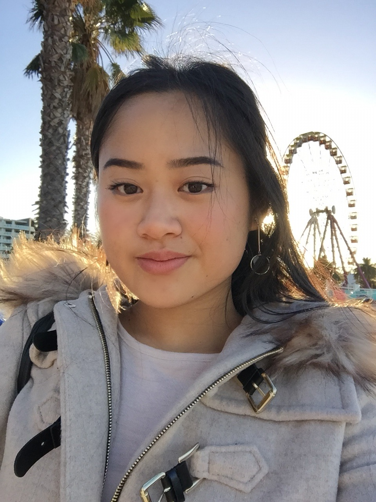

Team Profile
Team Members
There are four members in our team, "Powerpuff Girls" - Natanya (s3488872), Martina (s3908137), Wendy (s3898700) and Thao (s3901351).
Natanya
 Hi, I’m Natanya and I’m from Melbourne - I was born in Sri Lanka and migrated to Australia when I was four. My passions are travel, fashion, photography, singing, design, and social psychology. I’m also passionate about the environment, international aid; and volunteering in these areas! I have travelled over the years to around 16 or so countries, in various capacities, learning the national languages where I could. After graduating high school in 2013, I went on to study a Bachelor of Fashion Design at RMIT for two years. Realising it wasn’t for me, and not what I wanted to do career-wise, I travelled and worked on and off, before considering enrolling in an IT degree. My pursuits in various areas over the years led me to realise I enjoyed things of a practical and logical nature, and my affinity for tech also made it easier to decide on this. Being a growing field, I found IT an ideal sector to enter, and already had some knowledge of the field through my brother (an IT consultant), and my own exploration and life experiences. Currently, I’d like to explore the areas of cloud-computing and cybersecurity, but am aware this might change. I’m a member of the team: Powerpuff Girls. You can read more about me here.
Hi, I’m Natanya and I’m from Melbourne - I was born in Sri Lanka and migrated to Australia when I was four. My passions are travel, fashion, photography, singing, design, and social psychology. I’m also passionate about the environment, international aid; and volunteering in these areas! I have travelled over the years to around 16 or so countries, in various capacities, learning the national languages where I could. After graduating high school in 2013, I went on to study a Bachelor of Fashion Design at RMIT for two years. Realising it wasn’t for me, and not what I wanted to do career-wise, I travelled and worked on and off, before considering enrolling in an IT degree. My pursuits in various areas over the years led me to realise I enjoyed things of a practical and logical nature, and my affinity for tech also made it easier to decide on this. Being a growing field, I found IT an ideal sector to enter, and already had some knowledge of the field through my brother (an IT consultant), and my own exploration and life experiences. Currently, I’d like to explore the areas of cloud-computing and cybersecurity, but am aware this might change. I’m a member of the team: Powerpuff Girls. You can read more about me here.
Martina
 Hi I’m Martina and I am Australian Vietnamese. I like to play the keyboard, guitar and ukulele, and my go-to songs to play are either recent pop songs or ballads that I learn off of Youtube. One other thing is that I never fail to sing or hum a tune at least once a day. I started in the field of commerce fresh after high school, but I always had a small interest in the field of information technology, so I actually switched midway through my previous degree to pursue IT at RMIT. My understanding in IT is basic even though I grew up with technology all around me. The closest IT experience I have is in my everyday consumption of all the different technologies surrounding me, but I am keen to learn more about information technology in this Bachelor’s at RMIT. You can read more about me here.
Wendy
 Hello, My name is Wendy Si and my student number is s3898700. I am from Shanghai, but was born and raised in Melbourne. My date of birth is the 8th of February 2003 and my background is Chinese. I graduated from Nossal High School in 2020 and am now a first year Bachelor of Information Technology at RMIT. I can speak English and Mandarin Chinese, and can understand Shanghainese. A fun fact about me is that I used to be a state level swimmer when I was around 10 years old. My hobbies are playing video games, reading manga, watching anime, going clubbing and going out with friends. My interest in Information Technology is mainly centred around the coding aspect, I am interested in creating programs and learning the languages. I like how Information Technology is very practical as well, with getting the opportunity to make things. This allows me to implement what I’ve learnt and be able to create projects and sharpen my skills. My experience in Information Technology is very minimal. I learnt enough HTML to build a website back in 2017 and completed an online course in Python 2 in 2018, however those skills are long forgotten as I haven’t retained my knowledge from that time. Our team's chosen name is the Powerpuff Girls.
Hello, My name is Wendy Si and my student number is s3898700. I am from Shanghai, but was born and raised in Melbourne. My date of birth is the 8th of February 2003 and my background is Chinese. I graduated from Nossal High School in 2020 and am now a first year Bachelor of Information Technology at RMIT. I can speak English and Mandarin Chinese, and can understand Shanghainese. A fun fact about me is that I used to be a state level swimmer when I was around 10 years old. My hobbies are playing video games, reading manga, watching anime, going clubbing and going out with friends. My interest in Information Technology is mainly centred around the coding aspect, I am interested in creating programs and learning the languages. I like how Information Technology is very practical as well, with getting the opportunity to make things. This allows me to implement what I’ve learnt and be able to create projects and sharpen my skills. My experience in Information Technology is very minimal. I learnt enough HTML to build a website back in 2017 and completed an online course in Python 2 in 2018, however those skills are long forgotten as I haven’t retained my knowledge from that time. Our team's chosen name is the Powerpuff Girls.
Thao
 FILL. You can read more about me here.
FILL. You can read more about me here.
Team Profile - Personalities and Dynamics
FILL